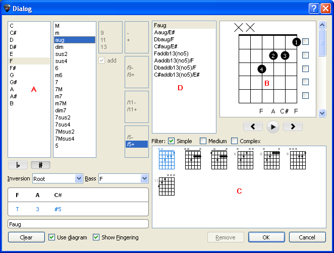

Hinweis:
Wenn Sie das Akkord Diagramm Fenster õffnen, werden die Noten des
Anschlags automatischübernommen und in dem Hauptdiagramm zur Darstellung
verwendet, falls sich an dieser Stelle nicht bereits ein Akkorddiagramm
befindet.
Hinweis:
Wenn Sie das Akkord Diagramm Fenster õffnen, werden die Noten des
Anschlags automatischübernommen und in dem Hauptdiagramm zur Darstellung
verwendet, falls sich an dieser Stelle nicht bereits ein Akkorddiagramm
befindet.Das Akkord Diagramm Werkzeug ist ein groflartiges Hilfsmittel in Guitar Pro. Und naturgem‰fl dadurch auch eine fantastische Referenz für Gitarristen.
Um das Akkord Diagramm Werkzeug zu õffnen, klicken Sie einfach in der Menüleiste: Noten > Akkord.
Wie jedes der Hilfsmittel in Guitar Pro, passt sich auch das Akkord Diagramm Werkzeug an die entsprechende Saiten-Stimmung Saiten-Stimmung der jeweiligen Spur, an. Auf Grund dessen, kõnnen Sie auch Akkorde für eine andere beliebige Stimmung finden und sogar für sehr exotische Stimmungen kreieren. Damit sind Sie in der Lage Akkorde zu bilden, die Sie in keinem Akkordbuch finden kõnnen.
Das Akkord Diagramm Werkzeug teilt sich in verschiedene Bereiche auf:

Jeder dieser Bereiche ist eng mit dem Andern verknüpft. Ebenso ist es wichtig zu
verstehen, was man alles mit dem Hilfsmittel machen kann, um die besten Ergebnisse
daraus zu erzielen.
Im Bereich (A) kõnnen Sie einen
Akkord anhand seines Namens finden. Sie haben die Mõglichkeit tausende
verschiedene Kombinationen einzugeben.
Wenn Sie auf die Liste im Bereich (A)
klicken, zeigt Ihnen Guitar Pro im Bereich (B)
ein Diagramm des Akkordes mit seinem Namen an. Und im Bereich (C),
wird Ihnen eine Diagrammliste aller gefundenen alternativen Griffe geboten.
Das erste Diagramm dieser Liste wird standardm‰flig zur Anzeige im Bereich
(B) ausgew‰hlt.
Es ist mõglich eine Umkehrung des Akkordes anzugeben (Grundton des Akkordes liegt nicht im Bass), oder irgendeinen anderen Ton als Grundton zu bestimmen (für die tiefste Saite).
Der Bereich (B) zeigt das Hauptdiagramm an (zum Beispiel den Akkord, der in die Partitur eingefügt werden soll) mit den Fingerpositionen, seiner Ausführung und seinem Namen. Die Fingerposition der Greifhand wird im Kreis der Note dargestellt, (1 - für den Zeigefinger, 2 - für den Mittelfinger,Ö ).
Zus‰tzlich ist die Fingerangabe unterhalb des Diagramms auf Schaltfl‰chen aufgeführt (um sie zu ‰ndern).
Sie kõnnen auch ein Akkorddiagramm erzeugen, indem Sie direkt auf das Hauptdiagramm klicken :
Um eine Note einzugeben oder zu lõschen
Benutzen Sie die Bildlaufleiste des kleinen Akkordfensters, um den Ausgangsbund zu verschieben.
Um das Greifen eines Fingers in BarrÈ zu setzen oder zu entfernen, klicken Sie auf die rechten Auswahlfeldern. Ein BarrÈ wird standardm‰flig zuerst von Guitar Pro vorgeschlagen, wenn dies für den Griff in Frage kommt.
Durch Anklicken und Auswahl der Zahlen unterhalb des Hauptdiagramms, kann man die Benennung der Griffpositionen individuell frei ver‰ndern.
Sie haben die Mõglichkeit den Akkordnamen, den
Guitar Pro vorschl‰gt, zu ver‰ndern. Dieser Name wird in der Tabulatur
angezeigt.
Wichtig: Sobald Sie auf das Hauptdiagramm klicken, wird im Bereich (A) die Auswahl auf "Neu" gesetzt, und der Name des Akkordes im Hauptdiagramm gelõscht, so dass Sie Ihren Eigenen eingeben kõnnen. Wir empfehlen, dass Sie einen Namen aus der Liste Andere Bezeichnung ausw‰hlen, weil so Guitar Pro in der Lage sein wird, die Tõne des Akkordes zu analysieren und im Bereich (A) zu benennen. Dann kõnnen Sie im Bereich (C) weitere
Griffbilder sehen für den Akkord, den Sie gefunden haben.
Oberhalb des Diagramms zeigt ein leerer Kreis an, dass die entsprechende Saite offen
gespielt werden soll (ohne dass ein Finger die Saite greift), und ein grofles X bedeutet, dass die Saite nicht gespielt wird.
Im Bereich (C), wird Ihnen eine Liste aller mõglichen Akkord-Diagramme angeboten,
die auf Grund der Angaben im Bereich (A) in Frage kommen.
Sie kõnnen die manchmal sehr vielf‰ltige Anzahl an Diagrammen durch das Setzen von Filtern eingrenzen, indem Sie eine der Optionen: Einfache, Medium, Alle, aus dem Bereich (C) ausw‰hlen, und somit, je nach Komplexit‰t, eine Einschr‰nkung der dargestellten Griffbilder vornehmen.
Klicken Sie auf einen der Diagrammen, damit es im Bereich (B) als Hauptdiagrammübernommen wird. Es ist ebenso mõglich die Griffbilder des Bereiches (C) zu durchwandern, indem Sie die horizontale Bildlaufleiste unterhalb des Hauptdiagramms benutzen.
Um sich den Akkord bei der Auswahl anzuhõren, w‰hlen Sie den Schaltknopf in der
untersten Ecke des Hauptdiagramms aus.
Der Bereich (D) Anderen Bezeichnungen, zeigt die verschiedenen Namen für
das Hauptdiagramm an. Mit einem Klick auf eine dieser alternativen Namen, analysiert Guitar Pro im Bereich (A) die neue Bezeichnung und stellt eine aktualisierte Liste der nun mõglichen Griffpositionen im Bereich (C) zur Verfügung.
Das Auswahlfeld Diagramm benutzen zeigt das Diagramm des Akkordes auf die Partitur an. Wenn das Auswahlfeld nicht ausgew‰hlt ist, wird nur der Name des Akkordes in die Partitur eingefügt.
Das ausgew‰hlte Auswahlfeld Fingersatz zeigt den Fingersatz des Akkords unter dem Diagramm an.
Der Knopf Lõschen kann einen Akkord auf dem ausgew‰hlten Takt lõschen.
Hinweis:
Wenn Sie das Akkord Diagramm Fenster õffnen, werden die Noten des
Anschlags automatischübernommen und in dem Hauptdiagramm zur Darstellung
verwendet, falls sich an dieser Stelle nicht bereits ein Akkorddiagramm
befindet.
Hinweis:
Wenn Sie Ihre Auswahl im Akkord Diagramm Fenster best‰tigen, werden die
Noten des Hauptdiagramms automatisch in die Tabulatur, an der Stelle an
der sich der Eingabezeiger befindet, eingetragen.
Hinweis:
Das Stylesheet
kann die Grõfle der Diagramme und ihre Positionen auf der Partitur
‰ndern.
Abschlieflend mõchten wir Sie gerne darauf hinweisen, dass das Akkord Diagramm Werkzeug für viele verschiedene Anwendungsmõglichkeiten genutzt werden kann. Zum Beispiel:
Für das Hinzufügen von Akkord Diagrammen in Ihre Partitur.
Um für einen bestimmten Akkord die verschiedenen Griffpositionen auf dem Griffbrett zu erlernen
Um den Namen eines Akkordes herauszufinden, den man auf dem Griffbrett entdeckt hat und um andere mõgliche Griffpositionen für diesen Akkord zu entdecken.
Um Griffe für exotische, oder einfach unbekannte, Instrumentenstimmungen zu erlernen.